The Emberdactyl's trophies (candidates: the user picked 11, 4, 7, 12 and 15)
The fifteen candidates (eleven of the adult, two with its volcano; its young bursting out of its egg; three of the two together). The user picked 11, 4, 7, 12 and 15, the game's Nos. 1-5 (the five).
No. 1 The Sky That Burns
Reared up on a spire of rock, wings flung up, screaming its kaiju scream
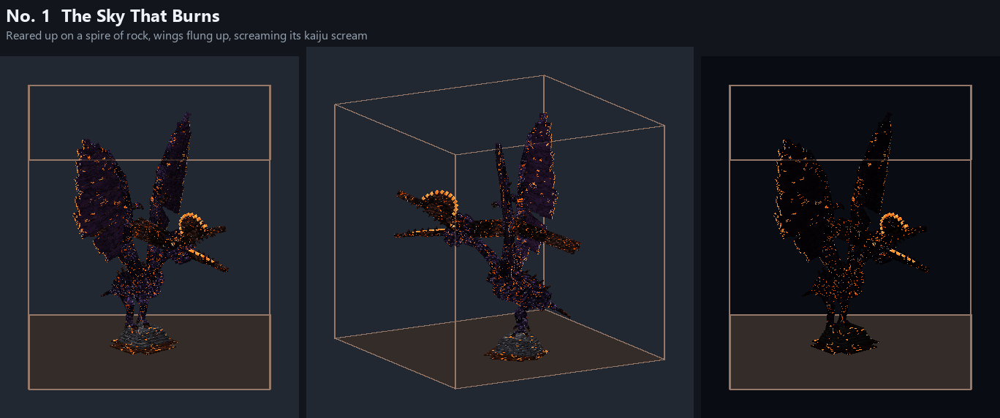
No. 2 The Downbeat
Hovering over a spire of rock, its great wings at the bottom of a beat
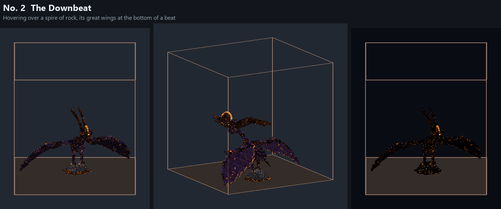
No. 3 Wide Glide
Gliding off a spire of rock on its full 33 blocks of wing
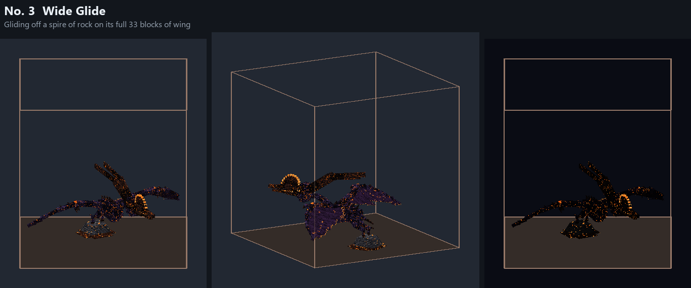
No. 4 Into the Fire
Plunging head first into a pool of lava, its wings swept back
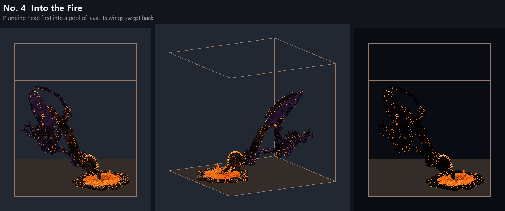
No. 5 Talons Out
Landing on a spire of rock, talons thrown forward
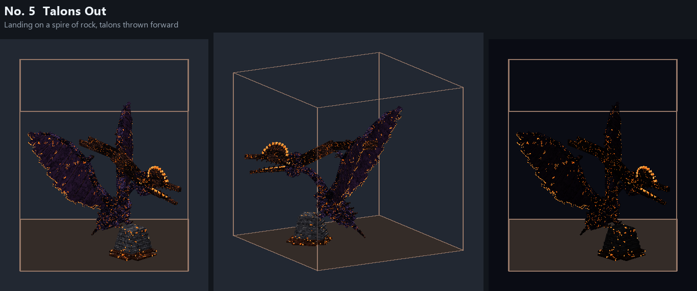
No. 6 Gathering Storm
Its wings closed together over its back, drawing in the fire tornadoes' gust
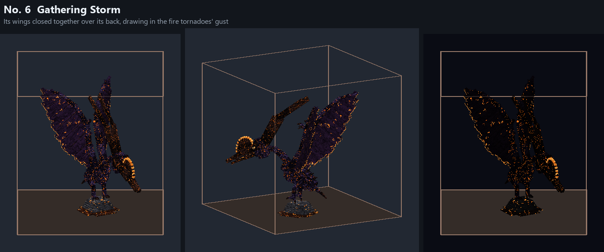
No. 7 Obsidian Beak
Down on the ground, its head drawn back to strike with its obsidian beak
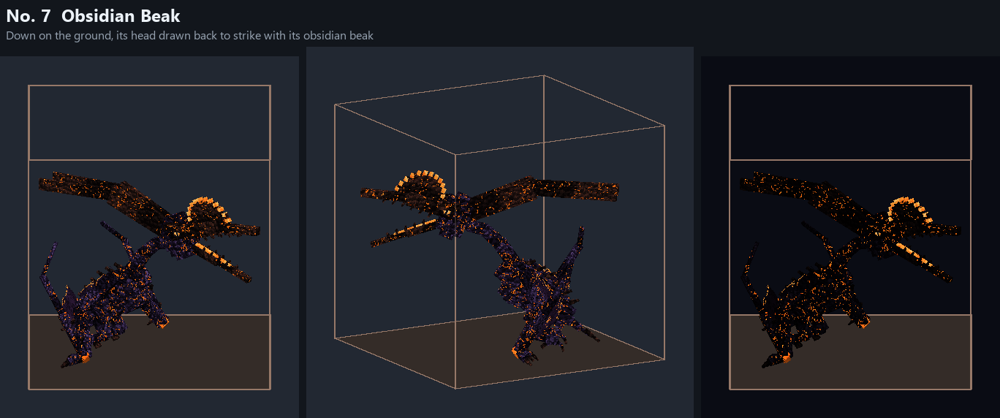
No. 8 At Rest
Perched on its legs and folded wings, looking out
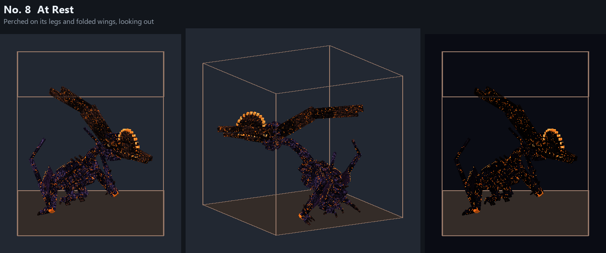
No. 9 The Last Scream
Its death: rearing back in its last scream as magma cracks split its hide
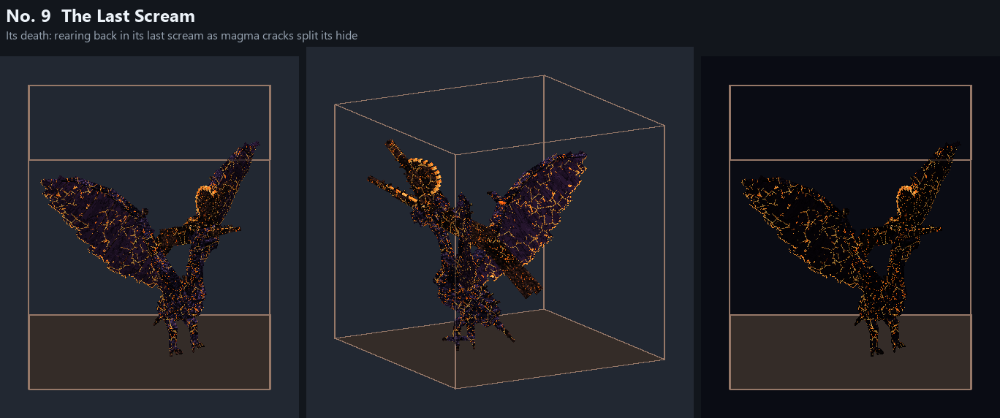
No. 10 Lord of the Caldera
Alighting on the rim of its volcano, wings raised over the crater
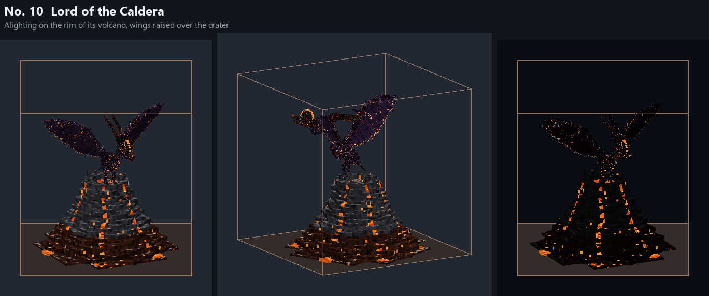
No. 11 Guardian of the Nest
Hovering over its volcano's crater, its egg in the nest below
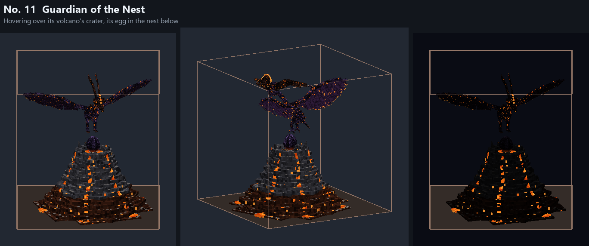
No. 12 Reborn
Its young bursting out of the egg, screaming, its wings flung up
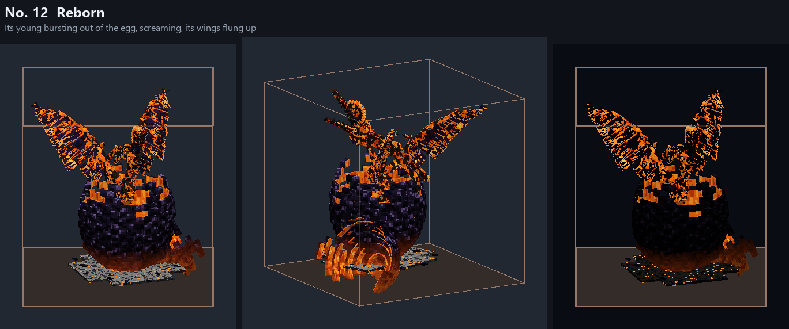
No. 13 Under Its Wing
The adult reared up, wings raised, its young perched before it
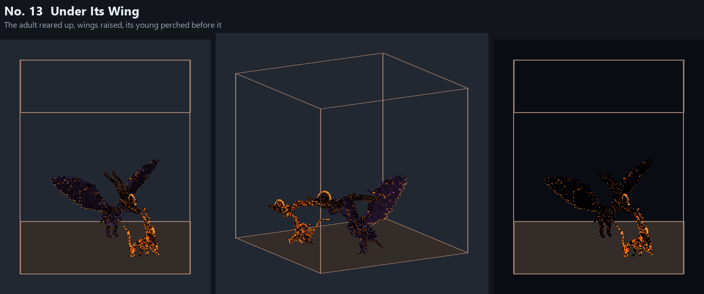
No. 14 Flight of Embers
The adult and its young taking flight together, each off its own spire
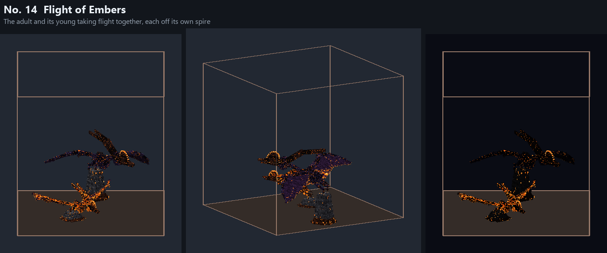
No. 15 Twin Screech
The adult and its young screaming side by side
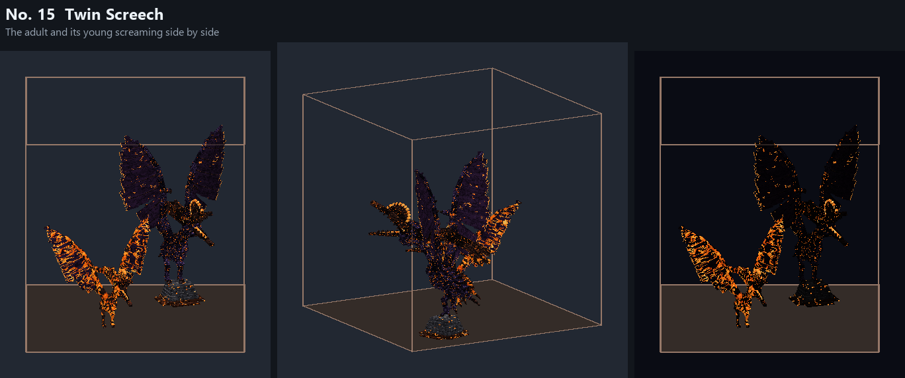